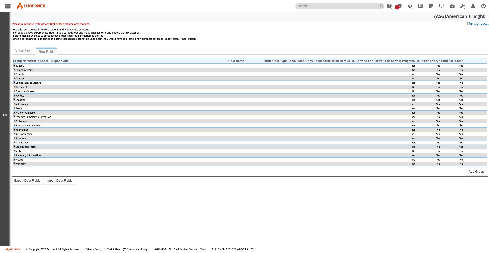
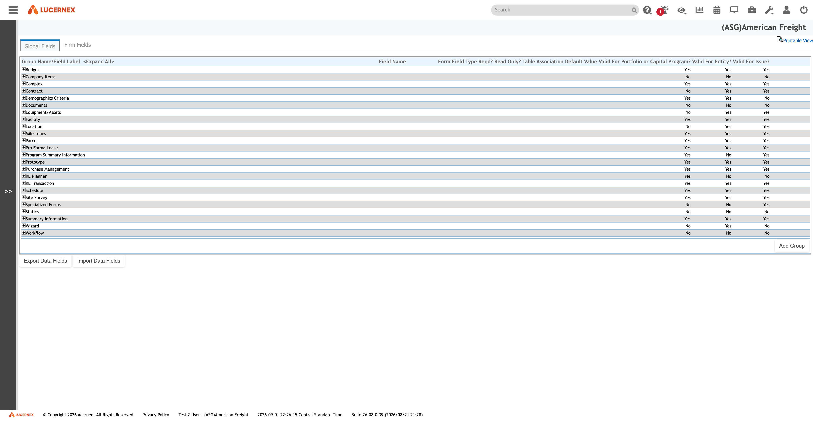

Atlas › Features › Required & Validation
Required & Validation
Where the obligation to fill a field in comes from — and the finding that it does not come from the layout. There is no layout-level required-ness layer: the red asterisk a user sees in the builder is the schema-required flag rendered at paint time, not a per-placement setting. Two further obligations live in the column flag and the catalogue flag, and they disagree on 44 fields in both directions, so collapsing them into one loses 44 obligations.
Open this feature in the map →
Who it is for
DerivedConfiguration administrators deciding what a user must fill in, and the developers who will have to reproduce that decision.
Source: docs/features/README.md
Where it is used
ObservedThe red asterisk in the record renderer, and the required flags in Manage Data Fields.
Source: docs/data-model/screen-routing.md
No layout-level layer
ObservedThe asterisk is not stored against the placement. It is the schema-required flag, rendered when the field is painted. A rebuild that models required-ness as a layout property is modelling something that does not exist in the source system.
Source: docs/features/required-and-validation/README.md
Two flags, not one
ObservedThe column flag and the catalogue flag are two separate obligations. They disagree on 44 fields, in both directions. Collapsing them loses 44 real obligations, so a rebuild has to carry both and decide which wins, field by field.
Source: docs/features/required-and-validation/README.md
Show and Require, unused
ObservedSHOW_AND_REQUIRE is one of the three conditional actions, and it is used zero times across both captured tenants. It exists; nobody has chosen it. Worth confirming before it is built.
Source: docs/features/required-and-validation/README.md
Required And Validation
ObservedWhat the required and validation manual settles: At least three, probably four independent sources of required-ness — and the column flag and the catalog flag are two obligations, not one: they disagree on 44 fields in both directions, so collapsing them loses 44 obligations. The red asterisk is a third whose storage is unresolved with one candidate left under test; Show and Require is a fourth that is used zero times. Biggest open question: Where per-placement required-ness is stored.
Source: docs/features/required-and-validation/README.md
Manual contents
ObservedThe required and validation manual is organised as: Layers 1 and 2 are two obligations, not one flag; Layer 3: the red asterisk — real, but unlocated; Layer 4: Show and Require — required-ness as a rule outcome; Layer 5: per-placement range validation, which nobody had recorded; Per-entity comparison; Adjacent field properties captured alongside Required?; What this means for ASG Edge+. Read it rather than this node when you need the detail — this is the index.
Source: docs/features/required-and-validation/README.md
Evidence
ObservedWritten up in features/required-and-validation/README.md. 2 screen captures on disk, under docs/assets/screenshots/data-fields — the screens themselves, not a description of them. 2 of them are cited by name in the documentation, which is what ties a capture to the screen it shows.
Source: features/required-and-validation/README.md
{kind=link}

manage-data-fields-firm.pngThe Firm Fields tab, the whole tenant-shaped layer -- 205 leaves against 5,953 global ones, 147 of them on Contract. Twenty-four groups, collapsed. Th{kind=link}

manage-data-fields-global.pngManage Data Fields on the Global Fields tab. The collapsed rows are ReportGroupData groups, not entities -- the grouping hierarchy that sits above theOpen questions (9)
Inferred9 things nobody has confirmed for this feature. Each one is work somebody has to do before the feature can be rebuilt with confidence; they are carried here rather than resolved by guessing. Click one for the question and the document that raised it.
Where is per placement
InferredWhere is per-placement required-ness stored? The central question. Three of four candidates are eliminated; DisplayOption1/DisplayOption2 is the last standing, and the test is written above. A null result is itself a strong finding: required-ness would not be stored in PageLayoutField at all. Nobody has confirmed this. Recorded in features/required-and-validation/README.md, under the Required & Validation area. Until it is settled, anything built on the assumption is a guess.
Source: docs/features/required-and-validation/README.md
Does Contract Status
InferredDoes Contract Status render asterisked on a real end-user contract form — in EDIT mode? The view-mode screen has now been captured and shows no asterisk, which proves nothing: view mode marks nothing required. Administration *lists* do show the marker outside the builder, which argues it is real. The outstanding test is one record opened for editing. Nobody has confirmed this. Recorded in features/required-and-validation/README.md, under the Required & Validation area. Until it is settled, anything built on the assumption is a guess.
Source: docs/features/required-and-validation/README.md
Is layout required
InferredIs layout-required enforced or cosmetic? This must be answered without mutating data. The static route is to read the client-side validator and its message catalogue off the rendered edit page, and check whether the required flag appears in the submit-time validation path or only in the render path — the same class of evidence that settled isReadOnlyRecord from the grid renderer rather than by deleting a value. Capture requested on that basis. Nobody has confirmed this. Recorded in features/required-and-validation/README.md, under the Required & Validation area. Until it is settled, anything built on the assumption is a guess.
Source: docs/features/required-and-validation/README.md
Is BOMapClientRecordID
Inferred~~Is BOMapClientRecordID the import upsert key?~~ Answered — Observed, not inferred. @clientID in the REST serialisation is BOMapClientRecordID, and the route symmetry confirms the upsert: /businessObject/{type}/clientid/{clientID} is a first-class peer of /lxid/{lxID}, and POST …?allowUpdate=true updates. See ../import-export/. Nobody has confirmed this. Recorded in features/required-and-validation/README.md, under the Required & Validation area. Until it is settled, anything built on the assumption is a guess.
Source: docs/features/required-and-validation/README.md
What does Functional
InferredWhat does Functional Field? mean? It is ReportGroupAvailableField.IsFunctional, a registry-level property — so it is decided once per field, not per table. 3,797 true / 2,690 false. Notes is false in 87 tables and Description in 49, which hints at "participates in business logic vs. free text" — but 18 tables have *zero* functional fields, which that reading does not explain. Not guessed here. Nobody has confirmed this. Recorded in features/required-and-validation/README.md, under the Required & Validation area. Until it is settled, anything built on the assumption is a guess.
Source: docs/features/required-and-validation/README.md
What does the contract
InferredWhat does the contract wizard mean by "Required fields are the…"? The step-one instruction in ../../tenants/bbw-wizards.json is truncated mid-sentence, and every one of the 35 captured DOM fields came back required:false — so the HTML required attribute is not the mechanism there either. Capture requested. Nobody has confirmed this. Recorded in features/required-and-validation/README.md, under the Required & Validation area. Until it is settled, anything built on the assumption is a guess.
Source: docs/features/required-and-validation/README.md
Does Show and Require
Inferred**Does Show and Require on a sub-page target require every field in the section, or only those already marked required?** Carried forward unanswered from conditional-fields.md. Nobody has confirmed this. Recorded in features/required-and-validation/README.md, under the Required & Validation area. Until it is settled, anything built on the assumption is a guess.
Source: docs/features/required-and-validation/README.md
Does UserClassSecurity
Inferred~~Does UserClassSecurity supply the missing read-only mechanism?~~ **Answered: yes, as View in Field Security.** The catalog's uniform ReadOnly = No is not an error — it answers a different question. What remains open is narrower: whether anything in the security model can make a field mandatory, as opposed to visible or editable. On the observed four-value vocabulary, nothing can. Nobody has confirmed this. Recorded in features/required-and-validation/README.md, under the Required & Validation area. Until it is settled, anything built on the assumption is a guess.
Source: docs/features/required-and-validation/README.md
Is required ness
InferredIs required-ness settable per workflow step? A Form has one layout per workflow step (forms-vs-pages-vs-layouts.md), so the same field could in principle be required at step 3 and not at step 1. Untested. Nobody has confirmed this. Recorded in features/required-and-validation/README.md, under the Required & Validation area. Until it is settled, anything built on the assumption is a guess.
Source: docs/features/required-and-validation/README.md